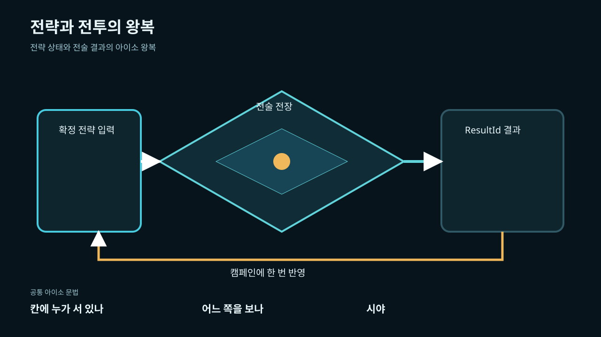
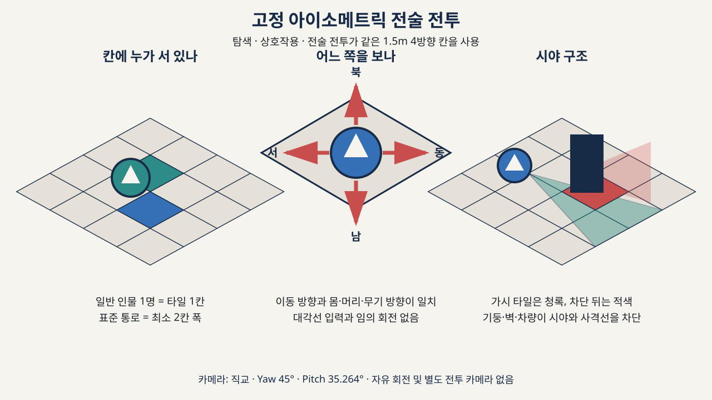
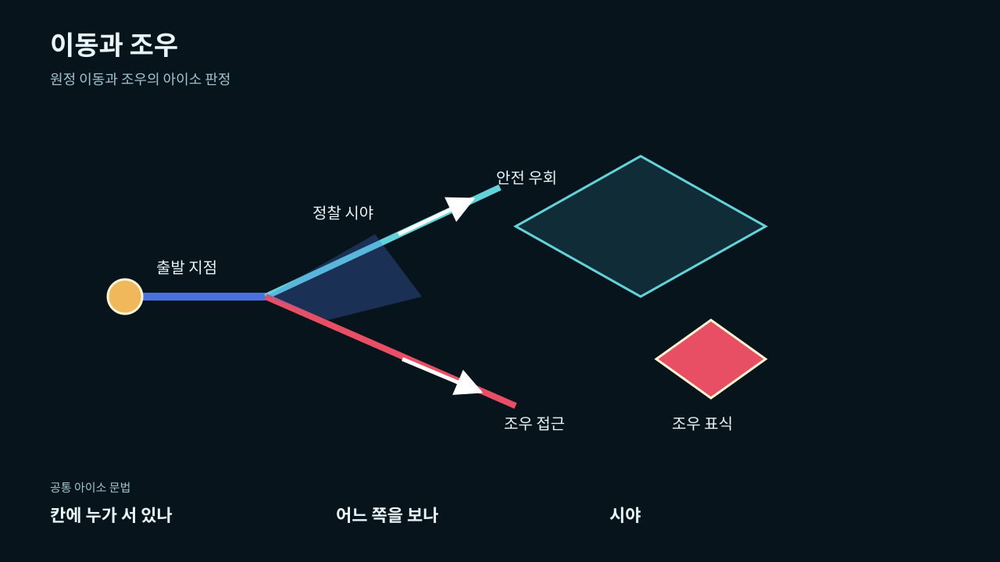

경로 판단 → 동행 확인 → 조우 대응
현재 위치와 다음 구간, 알려진 통행 상태·예상 소요·물자·관계를 먼저 읽는다. 파티 인물의 생업·부상·지원 역할과 전장 참가 대상을 구분한다.
조우에서는 교섭·우회·현장 거래·전투 준비를 검토한다. 현장 거래는 원정 결말인 교역과 다르다.
TARGET UI / 2026-09-19 / DESKTOP
이 문서는 목표 UI 설계와 과거 POC를 분리한다. 새 전투 구현 보고가 아니다. 인물 중심 캠페인과 파티, 생업·관계·직위·후계, 서울 역·노선 연결을 유지한다. 전투의 주 입력은 부대·진형 지휘이며 영웅의 이동·공격·회피를 직접 연속 조작하지 않는다.
기준은 Intent 결정 11과 Design 0절이다. 데스크톱 목표 상호작용 시연은 문서 상태만 바꾸며 게임을 실행하지 않는다. 공식 total-war-ui Archify 와이어프레임과 저장소 와이어프레임을 함께 읽는다.
아래 2026-09-11 이미지와 문장은 접힌 POC 역사다. 카드·격자·사이드스크롤·SD 표현은 목표가 아니며, 기존 이미지가 영웅 분리·병졸 상한·애니메이션풍 정비율을 구현했다는 뜻도 아니다.
현재 위치와 다음 구간, 알려진 통행 상태·예상 소요·물자·관계를 먼저 읽는다. 파티 인물의 생업·부상·지원 역할과 전장 참가 대상을 구분한다.
조우에서는 교섭·우회·현장 거래·전투 준비를 검토한다. 현장 거래는 원정 결말인 교역과 다르다.
| 표시 대상 | 목표 정보 |
|---|---|
| 영웅 지휘 인물 | 이름·초상·상태·현재 지시 / 병졸 수 제외 |
| 병졸 분대 | 현재 병졸 / 20 · 진형·사기·현재 지시 |
병졸 한 분대는 최대 20명이다. 영웅 수·전체 분대 수·군단 상한은 정하지 않는다. 인물 표현 목표는 애니메이션풍 정비율이며 기존 초상은 역사 참고다.
| 정보 우선순위 | 목표 내용과 상태 |
|---|---|
| 배치 | 닫힌 세션의 참가자·목표·지형·퇴로를 확인하고 부대 위치와 진형 방향을 검토한다. |
| 전장과 부대 목록 | 영웅과 병졸 분대를 별도로 선택한다. 선택이 없으면 명령은 비활성이다. |
| 현재 지시 → 미리보기 | 이동·공격·진형 방향·정지를 검토한다. 확인은 선택 부대의 현재 지시를 교체한다. 취소는 기존 지시를 유지한다. |
| 수락 기록 | 확인된 지시만 결정론적 수락 순서에 남긴다. 카드 자원·드로우·재충전·명령 큐·웨이포인트 연쇄는 없다. |
질문 무응답 뒤 채택한 설계 기본안: 3D 자유 지휘 카메라의 팬·오빗·줌, 그리고 파티의 닫힌 전투만 일시정지·재개. 소유자의 직접 선택으로 쓰지 않는다. 공유 캠페인 월드와 다른 파티는 멈추지 않는다. 정지 중 확인된 지시는 재개 뒤 다음 시뮬레이션 단계에서 적용하며 같은 부대의 새 확정 지시가 이전 지시를 교체한다. 감속·배속은 없다. 전장 도식은 문서용 청사진이지 실제 렌더가 아니다.
색·선·타이포의 참고는 아래 역사 자료에 보존한다. 역사 자료의 런타임 이름·수치·검증 완료 문구를 목표 승인으로 승격하지 않는다.
당시 보고서의 표현과 상태를 보존한 역사 자료다. 당시의 ‘계약 확정’, ‘완료’, ‘검증’은 현재 구현 증거가 아니다. 모바일 캡처도 과거 자료일 뿐이며 이번 검수는 데스크톱만 다룬다. Unity·Oddland·이미지 원본은 수정하지 않는다.
JANSEON: SEOUL / UI LAYOUT DESIGN MOODBOARD
붕괴 이후 서울 지하철을 무대로 하는 그랜드 전략 SRPG의 화면 설계를 영역별로 묶은 보고서다.
색·간격·화면 이름은 저장소 루트 Design.md가 계약이고, 각 화면의 형태는
poc/browser/에 동결된 브라우저 목업이 기준이다. 이 문서의 모든 이미지는 실제 산출물 —
동결 캡처, 재현 캡처, 위키 다이어그램 — 만 쓰고 새로 그린 삽화는 넣지 않았다.

docs/assets/wiki/janseon-seoul-cover.png네온 사이버펑크가 아니라 꺼진 안내판의 세계다. 차가운 비상등 청백 위에 드문 신호 적황, 노선도의 직교와 45° 폴드가 구분선 체계를 이어받는다. 채도는 노선·상태·위험에만 쓴다.
Button1/TODO placeholder간격은 720p 기준 4·8·16·24·40의 다섯 단계(--space-1..5), 1080p에서 6·12·24·36·56로 늘어난다.
반경은 칩 2·카드 4, 기본 테두리 1px, 포커스 링 2px다. CJK 줄바꿈은 단어 중간 강제 끊기를 쓰지 않고
조사 고아 1글자만 허용한다.
출처 — Design.md §1 시각 테제, §2 디자인 토큰, §4 프리미티브
한 씬이 모든 걸 소유하지 않게 잡았다. 프로세스는 Bootstrap이, 화면은 Foundation이 가진다. 빌드 순서는 Bootstrap 0 · Foundation 1로 고정이고, 씬 교체는 앱 FSM만 승인한다.
| 현재 상태 | 트리거 | 다음 | 결과 |
|---|---|---|---|
Booting | OpenFoundation | Transitioning | Foundation staging load 시작 |
Transitioning | SceneLoadSucceeded | Foundation | 준비된 scene lease commit |
Transitioning | SceneLoadFailed | Faulted | staging 폐기, 재시도 정보 보존 |
Faulted | Retry | Transitioning | 새 transition ID로 재시도 |
표에 없는 조합은 Rejected(IllegalTransition), 진행 중 중복 요청은
Rejected(Busy)로 거부한다. Gameplay 화면은 활성 lease당 Canvas 하나이고
모달 없이 같은 문서 안에서 패널 전환으로 단계를 표시한다. 키보드만으로 1차 액션 전부에 닿아야 하고,
포커스는 언제나 신호 황 링(stroke-focus)이다.

docs/assets/wiki/isometric-subway-layers.svg| 모듈 | 책임 | 엔진 참조 |
|---|---|---|
Janseon.Core | 노선·캠페인·정산·실시간 전투 계약 | 금지 |
Janseon.Foundation | 씬 흐름·화면·uGUI·전투 드라이버 | 허용 |
Janseon.Data | Unity 저작 데이터 | 허용 |
Janseon.Art | 런타임 슬롯·후보 | 허용 |
출처 — docs/game-logic/Unity-System-Design.md · docs/game-logic/Unity-Architecture.md · Design.md §5·§6
로고 영역 280×120, 액션 열 320를 세로 중앙에 쌓는다. Start 버튼은 공개 FSM
ApplicationFlowCoordinator.OpenFoundationAsync만 호출한다. 배경은 void에 희미한 노선 폴드 —
이미지 텍스처 의존 없이 uGUI 기하로만 그린다.

.omo/evidence/windows-html-poc-20260909, worktree 보관)출처 — Design.md §3.1·§5.1 · 당시 참조: docs/game-logic/Ui-Implementation-Pipeline.md (현재 경로 없음)
1280×720에서 위쪽 스테이지 레일 64px, 왼쪽 노선 360, 오른쪽 상세 860. 전투에 들어가면 노선 패널을 숨겨 HUD에 가로 공간을 넘긴다.
칩 상태는 idle · current · done · locked 네 가지고, current는 하단 2px 신호 바로 색만이 아니라 이름 접미사로도 구분한다. 세로 시간축은 행동 → 시간 → 하루 → 한 주 순서로 플레이어 근처는 자세히, 먼 세계는 집계로 처리한다.

poc/browser/recovered-campaign/ —
관리·원정·조우·진형·실시간 전투 탭이 한 흐름으로 연결된 통합 원정 표면
docs/assets/wiki/isometric-campaign-loop.svg출처 — Design.md §3.1·§5.2 · docs/game-logic/Campaign-Loop.md · poc/browser/recovered-campaign/
조우 해결은 encounter-choices 안의 카드 세 장이다. 교섭·우회·전투가
각자의 억센트 스트로크를 쓰고, 카드 상태는 idle · focus · selected 세 가지뿐이다.
억센트 #5B6B8A — 대화와 거래로 푸는 길
억센트 #3F6B54 — 싸움을 피해 가는 길
억센트 #8B4A3A — 같은 격자의 실시간 결착

.omo/evidence/windows-html-poc-20260909, worktree 보관)출처 — Design.md §5.2 · docs/game-logic/Travel-and-Encounters.md
전투는 턴제 타일 SRPG가 아니다. 게임뷰는 고정 아이소 승강장을 채우고, 분대(6대 6, 분대당 병사 4 + 리더)가 실시간으로 움직인다. HUD는 그 위 오버레이 — 상단 미터, 하단 132×180 카드 독. 중앙 5×5 셀 보드는 계약이 아니다.
게임뷰 HUD 미리보기에서 승강장 위 분대와 카드 독을 본다.
| 항목 | 값 | 비고 |
|---|---|---|
| 틱 | 30Hz · 프레임당 최대 4스텝 | D1 드라이버만 BattleSim.Step 호출 |
| 인물 카드 재충전 | 방패벽 300 · 격려 600 · 협공 450 · 기동 재집결 600틱 | 소유자별 독립 타이머 |
| 거점 카드 | 보급 900 · 통행 750틱 · 슬롯 2 | 아군 전체 공유 |
| 사기 | 기본 60 · 경고 40 · 회복 상한 80 · 항복 상한 20 | 지휘관 HP 50% 이하 + 퇴로 확보 조건 |
| 지휘 반경 | 3칸 | 리더 반경 안 인물만 카드·협공 대상 |
| 줌 | 0.72–1.75 · 스텝 0.05 | −/+/기본 버튼, 44px |
| 규칙 버전 | rtfc-owner-cards-v2 | 동일 입력 기록은 동일 결과 |

poc/browser/battle-preview/ —
좌측 격자 전장, 우측 370px대 분대 지휘 패널


docs/assets/wiki/isometric-battle-roundtrip.svg출처 — Design.md §3.1·§5.2 ·
docs/game-logic/Realtime-Formation-Card-Battle.md ·
docs/game-logic/Strategy-Battle-Roundtrip.md ·
Unity 캡처 task-09/11(작업 트리 unity-poc-mac 보관)
전투 직전 배치는 우측 고정 레일에서 한다. 여섯 분대 목록, 전열·중앙·후열 3×3 목적 슬롯, 네 방향 정면 지정, 확인·취소가 한 패널에 담긴다. 배치는 양측 6개 논리 분대(분대마다 병사 4 + 중앙 리더) 기준이다.
formation-edit-facing-n/e...)formation-edit-confirm · formation-edit-cancel전장 원형은 일곱 종 — 작은 역사·환승역·종착역·터널·지상 폐허·차량기지 인접·한강 횡단. 좁은 전열과 측면 노출이 진형 선택을 바꾼다.

poc/browser/formation-editor/ —
좌측 아이소메트릭 승강장 배치도 + 우측 FORMATION CONTROL 레일

출처 — Design.md §5.2 · docs/game-logic/Realtime-Formation-Card-Battle.md 전장의 기본 형태 · poc/browser/formation-editor/
모든 카드 수치는 승인된 브라우저 목업에서 왔다. 프레임 132×180에 신호 황 테두리, 아트 웰 107px, 소유자 초상 32px, 취소·줌 버튼 44px. 재충전은 아래에서 위로 걷히는 베일로 보인다.
poc/browser/avatar-preview/


초상 8종 — docs/assets/wiki/portraits/(512px 표시 사본) ·
캐릭터 방향은 TOS식 SD, 3D 바디 + 2D 도트 헤드의 2.5등신 실루엣

출처 — poc/browser/avatar-preview/ · poc/browser/README.md · docs/game-logic/Character-Art-Direction.md · docs/game-logic/Cast-Profile-Contract.md
정산은 화면 한가운데 520폭 카드 하나로 끝낸다. 부상·시간·물자·관계·평판·노선 상태 변화가
정확히 한 번(ResultId)만 반영되고, 복귀 액션으로 gameplay 문서로 돌아온다.

.omo/evidence/windows-html-poc-20260909, worktree 보관)출처 — Design.md §3.1·§5.2 · docs/game-logic/Campaign-Loop.md 6단계
탐색과 전투가 같은 규칙을 공유한다. 고정 직교 아이소메트릭 카메라(yaw 45° · pitch 35.264°), 1.5m 4방향 타일, 2.5등신 실루엣. 이 세 값은 장르 계약 JSON과 EditMode 테스트로 잠겨 있다.

docs/assets/wiki/isometric-grammar.svg
docs/assets/wiki/isometric-travel-encounters.svg
| 항목 | 값 |
|---|---|
| 카메라 yaw / pitch | 45° / 35.264° |
| 타일 | 1.5m · 4방향 |
| 실루엣 | 2.5등신(TOS식 SD) |
| 셀 크기(720p) | 64px · 최대 5×5 |
| 셀 크기(1080p) | 96px |
검증은 GenreContractTests가
계약 JSON과 Foundation 씬 카메라를 대조한다.
출처 — docs/game-logic/Unity-System-Design.md 테스트 전략 · docs/game-logic/Travel-and-Encounters.md · docs/game-logic/Character-Art-Direction.md
화면을 유니티부터 짜지 않는다. HTML로 여러 안을 만들고 사람이 하나를 고르고, 목업이 실제로 움직여야 비로소 uGUI로 옮긴다. 동결 시점의 바이트 해시가 이식의 기준선이다.
UiElementNames가 단일 출처 — 목업 컨트롤과 유니티 이름이 일대일 대응RuntimeSlotCatalog 금지| 표면 | 설계 | 목업 동결 | uGUI 이식 | 비고 |
|---|---|---|---|---|
| 지휘관 카드 | 계약 확정 | 완료 | 완료(132×180 독) | 카드 그림 입력 복원이 첫 POC 과제였음 |
| 진형 편집 | 계약 확정 | 완료 | 완료(3×3 · facing) | 레일 스택 정렬 수정 이력 있음 |
| 실시간 전투 미리보기 | 계약 확정 | 완료 | 진행 — PR #81 통합 | 줌·베일·리프트는 테스트로 잠금 |
| 회수 캠페인 | 계약 확정 | 완료 | 부분 | 생성→허브→대화→노선→조우→진형→전투→정산 |
| 타이틀·거점·조우·정산 재설계 | 별도 증분 대기 | — | — | 같은 파이프라인으로 다시 그리는 일이 다음 단계 |


출처 — 당시 참조: docs/game-logic/Ui-Implementation-Pipeline.md (현재 경로 없음) · poc/browser/README.md · docs/game-logic/Unity-Architecture.md · docs/game-logic/Development-Roadmap.md